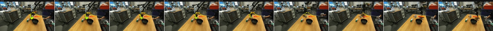

Human hands
Learn interaction structure from abundant human demonstrations.
ContactFlow is an embodiment-agnostic action representation that describes manipulation through trajectories of 3D contact points— shared by hands, grippers, and robots.

The same physical intent can look radically different across embodiments.
Contact is the common language.01 / The idea
Instead of conditioning a world model on actor-specific appearance or joint commands, ContactFlow isolates where interaction happens and how that interface moves through 3D space.
Learn interaction structure from abundant human demonstrations.
Express robot plans using the same contact-centric signal.
Transfer action conditioning without copying actor geometry.
02 / Preview
The model receives an initial scene and a ContactFlow condition, then predicts the visual outcome. Each six-second example compares the predicted rollout with the observed future.
Real robot manipulation
Transfer to simulation
Human hand interaction
Egocentric generalization
Videos play when visible. Full evaluation and additional examples will accompany the paper release.
03 / Release
This is the official release repository. We will update it with the paper, implementation, checkpoints, and processing tools as they become available.
@inproceedings{contactflow2026,
title = {ContactFlow: A Video Action Conditioning
that Transfers Across Embodiments},
year = {2026}
}
Complete author and venue metadata will be added after review.